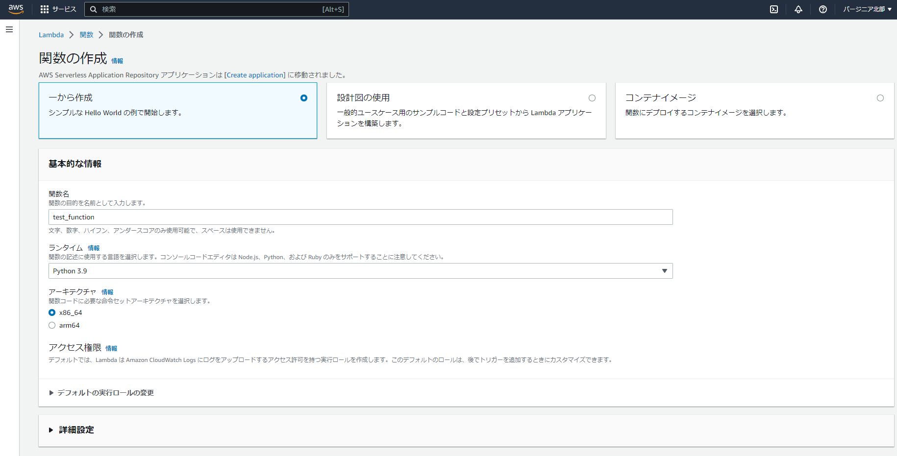
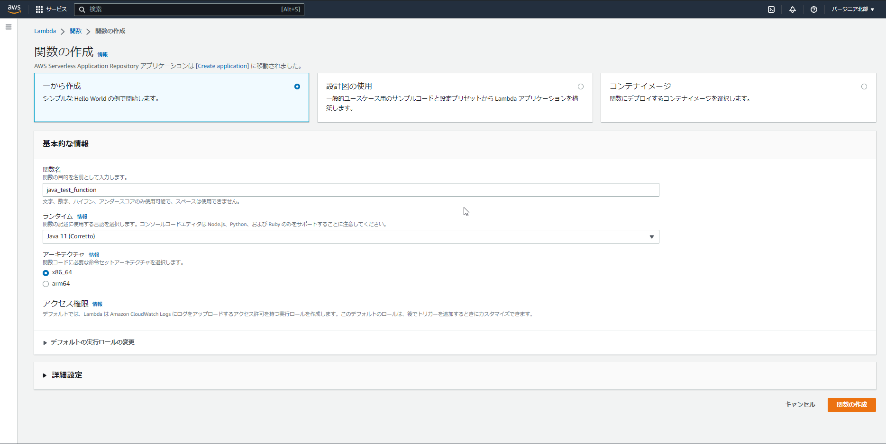
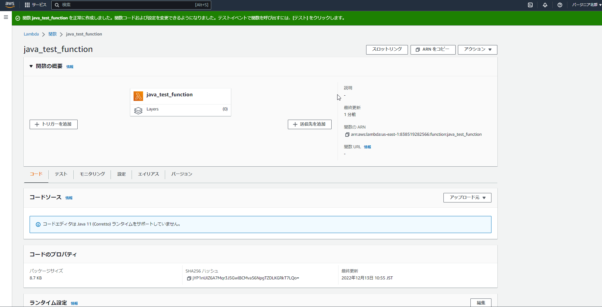
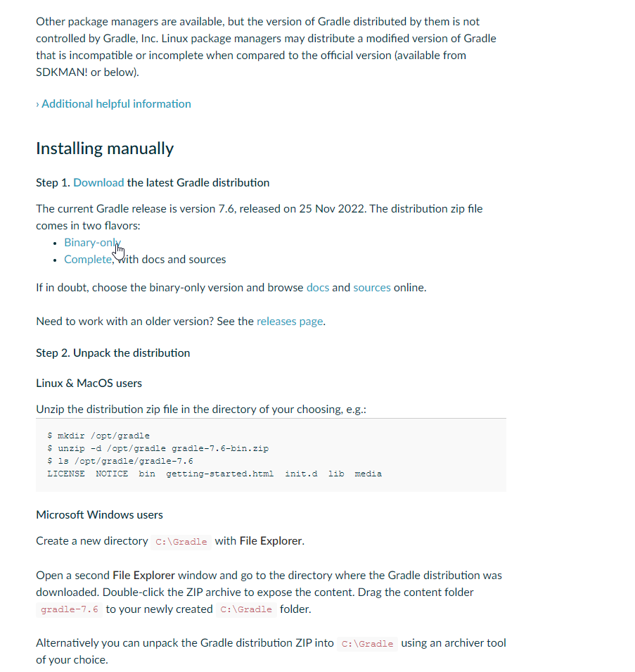
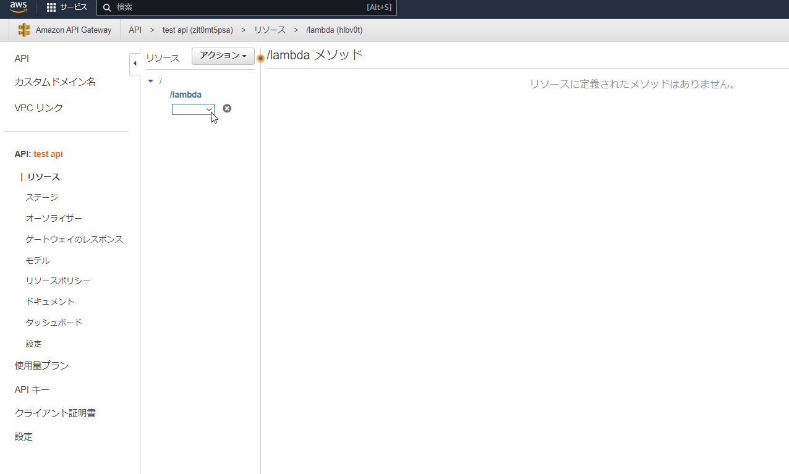
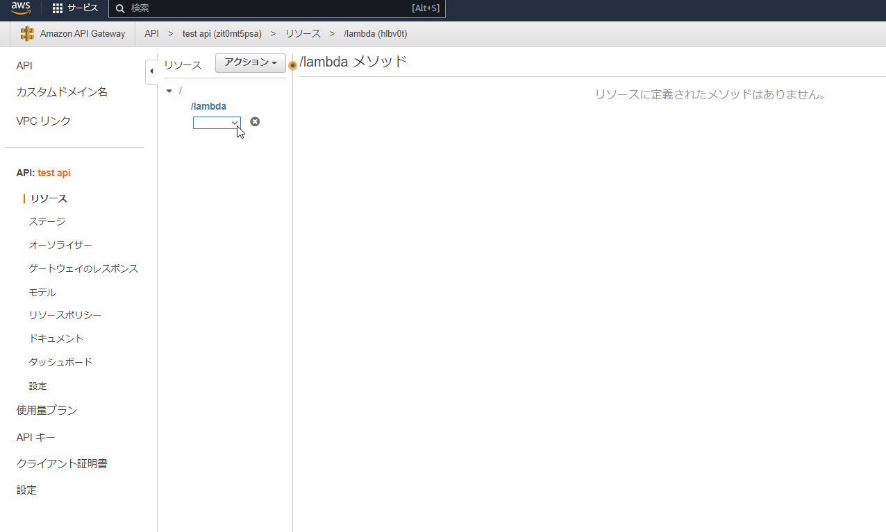
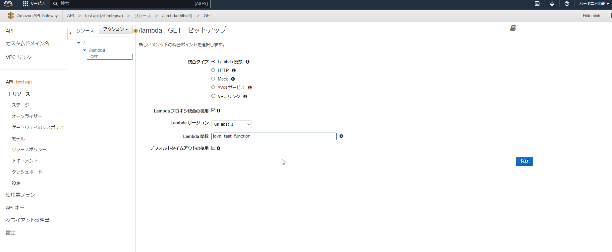
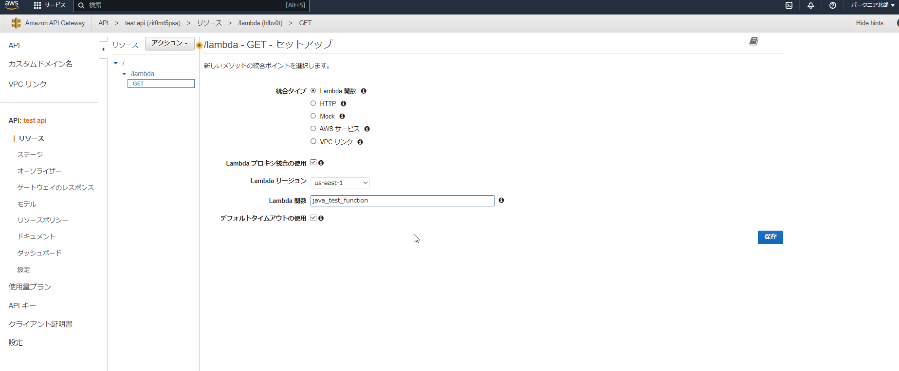
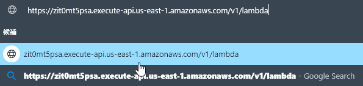
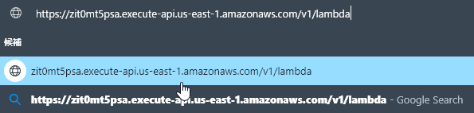

業務で Lambda+Java の環境での開発を行いましたが、Java での開発は初めて+Lambda も初めての初心者状態からの試行で色々躓きました。
AWS の各機能についてはだいたいが公式のリファレンスを置いているのでわかる方には不要かと思いますが、自分のように「Java も Lambda も初心者がとりあえず最速で動かしたい」といった場合に、他の方の参考資料や自分の備忘録として残しておこうと思い作成しています。
最低限動作させるところが目的で、細かい設定などは省略しています。
通常、この手の話はネット上ですぐ出てくるのですが、今回の組み合わせで適当なレベル感のものは見当たらず…
Python や NodeJS はコンソール上で手軽に試行できるようになっているため、Lambda において使用されるランタイムとしてはネット上では Python や NodeJS が主流で、比較的 Java を使用した例は少なく、ネット上の記事を見ても、Java を使用した解説などは少ないようです。
最終的には API GateWayと接続するLambda 関数の作成について記載していきます。
Lambda、関数の作成ボタンから作成画面を開く

ランタイムはJava11を選択
「関数の作成」を押下

確認 
OpenJDK_11のダウンロード

Gradleのダウンロード


Handler設定
/**
- Lambda ハンドラークラス.
*/
public class SampleHandler implements RequestHandler<Map<String, Object>, Object> {
/**
- Lambda Function メイン関数.
*
- @param event APIGatewayイベント情報
- @param lambdaContext トリガー発火時に渡されたJSONデータ内情報
- @return 処理結果
*/
@Override
public Object handleRequest(Map<String, Object> event, Context lambdaContext) {
..........(処理内容)...........
}
}


ビルド設定
task buildZip(type: Zip) {
from compileJava
tasks.withType(JavaCompile) {
options.encoding = 'UTF-8'
}
from processResources
into('lib') {
from configurations.runtimeClasspath
}
}
.........
build.dependsOn buildZip
サンプル
gradle.build を実行します。


作成したいAPIの構成によっては繰り返しリソースを作成します。
 


 
※このとき、選択する Lambda 関数のレスポンス型はAPIGatewayProxyResponseEventに適合する型である必要があります。（Sampleを参照）


 
